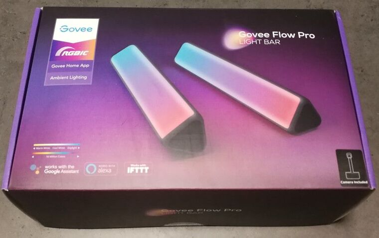
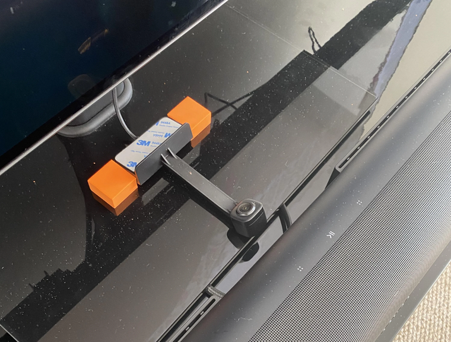
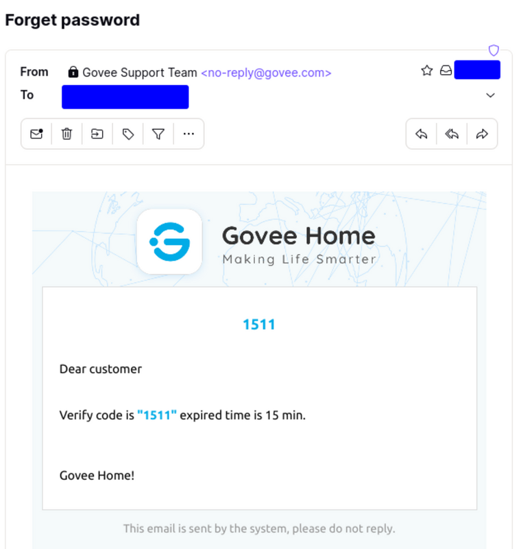
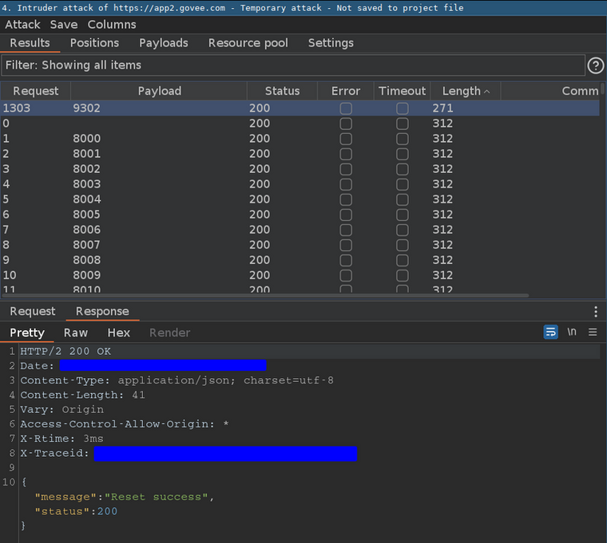
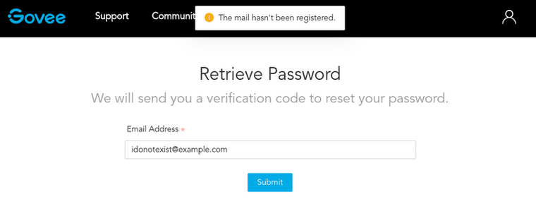
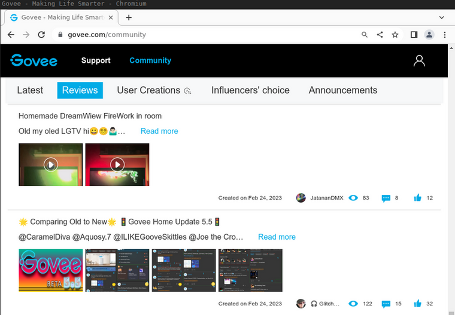

Groovy Govee Account Takeover
Recently, I got my hands on the Govee DreamView P1 Light Bars (model H6054).

According to Govee, their product uses the smart camera to intelligently recognize and capture the colors on your TV screen and automatically applies them to your backlights.
This device reminds me, in terms of functionality, of the Philips Ambilight, only that the product comes in different variations and can be installed on TVs and monitors.
Before telling you more about this easy-peasy yet impactful account takeover of all Govee Home connected devices, let me introduce you to Govee first.
Govee is a global leading smart home brand pursuing personalized and fun life experiences through continuous innovations since 2017, especially in ambient lighting, home appliance products, and smart IoT systems. We design it. We produce it. We make life smarter.
The most important facts about Govee:
- >12 million registered Govee Home app users
- >$200 million dollar annual sales in 2020
- Distribution in 60+ countries
- Headquarter based in Hong Kong
As you may already have noticed Govee is a global player in RGBIC market with a good amount of registered users.
The H6054 itself has a lot of interesting attack vectors like:
- Global Android and iOS app for all Govee products (Govee Home)
- Bluetooth communication
- Wifi communication
- Hardware
- Controlbox
- Camera
- Lightbars
For those of you who are now wondering, this is how the camera looks in action:

For me this is the perfect research target, as my main focus has always been on web applications and corresponding source code reviews. This project allows me to expand my knowledge in mobile application and hardware topics.
The Account Takeover
During account registration a 4-digit confirmation code is sent to the email address to verify the ownership. This already looked interesting, so I made a quick note and continued with the setup. Later, after establishing the setup I started playing a bit around to understand how the Govee architecture works and where to dive deeper into.
Using the mobile application there are three main types of communication:
- Communication with Govee’s infrastructure (HTTPS)
- Communication with Govee devices via WiFi (AWS IoT, MQTTS)
- Communication with Govee devices via Bluetooth
Being most familiar with the web aspects, I decided to first take a look at API calls via HTTPS and complete this task before moving on to new parts where I needed to challenge myself and learn something new.
The HTTPS API is mostly used for central settings of the Govee Home user profile, but also for other functionality like providing the MQTTS certificate and firmware updates.
At some point I decided to reset my Govee Home password and immediately saw the already familiar 4-digit code in my postbox.

Now I got curious and asked myself how do they protect this against brute force attacks? Let’s find out!
Quickly spinning up BurpSuite Intruder and defining a code range from 0000-9999. In less than a minute I had my answer: They don’t!

Everything needed for an account takeover was a valid email address. This is how fast a small research project on a specific product turned into a global account takeover endangering all users and their connected devices. But how to we get valid email addresses?
Account Enumeration To The Rescue
If you read a couple of penetration test reports, chances are you have seen a finding called something like “User Enumeration”. Typically, these findings have a low risk and are often neglected. Based on different responses of the application like “Email has been sent." or “This user is unknown." an attacker can enumerate if an account exists or not. Happily for us, Govee has a similar behavior. For every login or password reset request, Govee will let us know if the entered email address is not valid.

One way of finding valid email addresses would be to just randomly fire tons of email addresses against the API endpoint, however there is a more convenient way.
May I present? The Govee community!

All an attacker has do to is to scrape the nicknames from all posts and mutate the names with a list of typical email providers. Even better is the fact that employees of Govee are also registered in the forum, which may allow taking over accounts with higher privileges.
This attack scenario remains theoretical, as this would cross the line and goes beyond our proof of concept.
The Impact
As mentioned before this exploit was as straight forward as possible. Brute forcing a 4-digit code does not need a lot of technical knowledge.
Which made me think - has nobody tried this before?
We are talking here about 12 million(!) registered app users, where each user could have multiple devices.
Lots of these devices have sensitive functions like cameras or smart lights that allow to play arbitrary sounds.
Obviously, I wanted to know how easy an attacker with an account in his hands is able to spy on a victim using the camera.
After a short while I discovered the calibration function, which as the name suggests if for the initial setup and allows to calibrate the camera for the mounted monitor.
Using the calibration function triggers the following request:
GET /appco/v1/calibration/point?device=<censored>&sku=H6054 HTTP/2
Host: app2.govee.com
Cookie: [..]
Authorization: Bearer ey<censored>
[..]
The application answers with:
HTTP/2 200 OK
[..]
{
"message": "",
"status": 200,
"data": {
"device": "<censored>",
"sku": "H6054",
"imgUrl": "https://d1f2504ijhdyjw.cloudfront.net/snapshot-img/<censored>-snap.jpg",
"points": [
{ "pointX": 160, "pointY": 1066 },
{ "pointX": 80, "pointY": 595 },
[..]
]
}
}
The “imgUrl” has exactly what I was looking for and allows us to get a live snapshot from the camera at any time. Here is an example image made while testing the calibration endpoint:
The file is reachable unauthenticated on CloudFront and has been lying there around for two months now.
I made multiple recommendations on how the password reset mechanism can be implemented more secure. Govee decided not to change the code itself, but to invalidate the reset code after the first wrong attempt.
Conclusion
I didn’t think my little project would be fruitful so quickly and that much more digging would be required to find something critical. Let’s see what I will find in the upcoming weeks. Also, as this is my first post on this blog: Hello world!
Timeline
- 15.03.2023: Initial contact to Govee support
- 16.03.2023: Govee requesting vulnerability details
- 16.03.2023: Asking Govee for secure communication method
- 17.03.2023: Govee provided email address for secure communication
- 17.03.2023: Initial contact with security team, requesting PGP key
- 23.03.2023: Contacting security team again, after no answer
- 30.03.2023: Contacting Govee support again, since security team is not answering
- 31.03.2023: Supports answers to check with the security team
- 03.04.2023: Security teams answers and provides PGP key
- 05.04.2023: Sending detailed vulnerability description to security team
- 06.04.2023: Govee confirms that they could decrypt the PGP email
- 11.04.2023: Asking Govee if they were able to verify the vulnerability
- 13.04.2023: Govee has problems to decrypt the email and open the attachment
- 13.04.2023: Trying to help Govee with PGP setup
- 13.04.2023: Govee asks to send information unencrypted
- 13.04.2023: Sending information unencrypted
- 13.04.2023: Govee thanks me for the information and wants to expedit the process
- 14.04.2023: Govee states they have fixed the vulnerability
- 16.04.2023: Retest and telling Govee that the vulnerability is still available on other endpoints
- 18.04.2023: Govee confirms to analyze and fix all endpoints with the same behavior
- 20.04.2023: Govee states they have fixed all additional endpoints